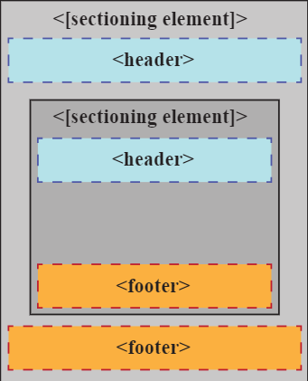

Familia Unadista,
¡adelante!
por Colombia luchad
con amor,
lleguemos con ciencia
a la gente,
transformémosla en
un mundo mejor.
FOOTER
Se trata de una etiqueta para encerrar todo aquel código de las partes inferiores de las páginas web. Contendrán por tanto enlaces a otras webs relacionadas, al mapa de la web, a una página de comentarios sobre el copyright, una política del portal, quizás algo de publicidad, etc. Footer significa pie y aunque está contruida para contener lo dicho, no ha de tener que estar en la parte más baja de una página web para poder ser un footer. Tened en cuenta que todas etiquetas intentan informar a los navegadores sobre lo que pueden contener esos bloques, no más. No olvidemos que el aspecto, apariencia e incluso la posición dentro de la web. Esas cosas ya las leeran en la hoja de estilo. Un footer o pie de página, puede contener tantos elementos como sea necesario. No ha de limitarse a contener lo dicho antes. Existen páginas con verdaderos super pies de página, con una ritra enorme de enlaces, con información acerca del registro en el portal correspondiente, con la títpica "letra pequeña" en la que se detallan condiciones de temas expuestos en el contenido principal.emas. Puede por tanto contener incluso sections, articles.
El elemento de HTML (section) representa una sección genérica de un documento. Sirve para determinar qué contenido corresponde a qué parte de un esquema. Piensa en el esquema como en el índice de contenido de un libro; un tema común y subsecciones relacionadas. Es, por lo tanto, una etiquéta semántica. Su funcionalidad principal es estructurar semánticamente un documento a la hora de ser representado por parte de un agente usuario. Por ejemplo, un agente de usuario que represente el documento en voz, podría exponer al usuario el índice de contenido por niveles para navegar rápidamente por las distintas partes.
|  |
ARTICLE
Creo que podríamos saber si un bloque de código debería pertenecer a un Article si al preguntarnos si ese bloque tiene sentido al colocarlo solo, separado del resto de contenido actual, tiene o carece de sentido. Si al separarlo o independizarlo se pierde su sentido, no es un Article. Si en cambio al separarlo del resto de contenido de la página web el bloque pierde su sentido. En una página web pueden existir varios articles, dentro de un section o incluso independientes del mismo. Pueden además contener en su interior títulos con h1 y párrafos, además de otros articles en su interior. Quizás sea fácil confundirlos con los section. Veamos si con el uso aprendemos a distinguirlos un poco, no es sencillo por ahora, verdad? Un ejemplo real de article podría ser un mensaje de un foro, el artículo de una revista o periódico, un comentario de un usuario a una entrada de blog o incluso una entrada en un blog. La estructura podría ser la siguiente:
article
h1 La etiqueta Article h1
La etiqueta article suele usarse para fragmentos independientes de contenido
...
article